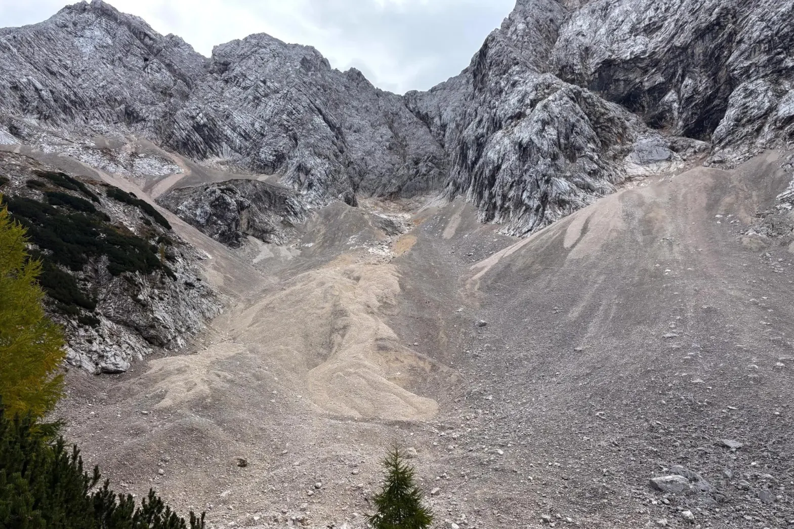
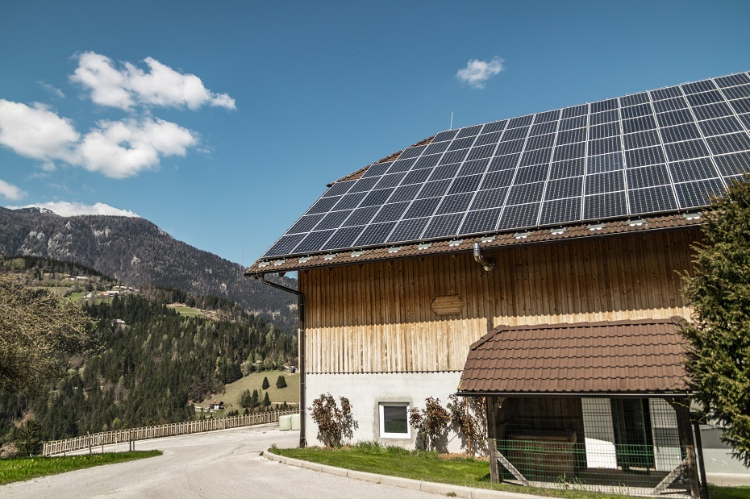
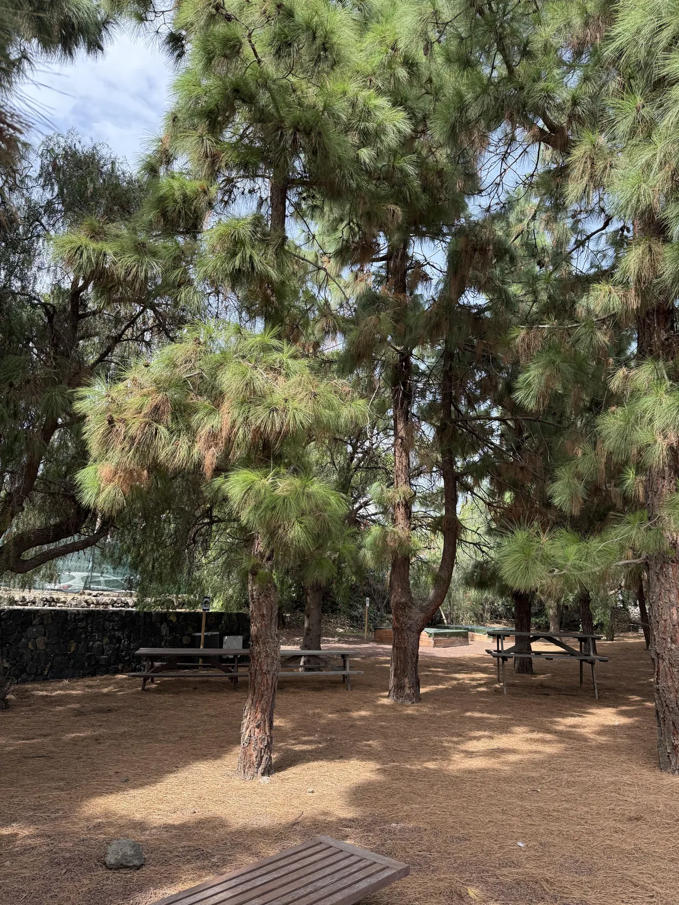

Homepage sample · The same component and styles used on the website


Climate change
in 12 photographs
Triglav Glacier, summer 2025
Very little ice remains in this summer view. See how the glacier’s mapped area has changed since 1946.
Triglav Glacier · Summer 2025
Colour
Paper for reading. Deep green and near-black for image-led sections. Lime is reserved for selected controls and small highlights.
--color-paper--color-forest--color-accent--color-inkTypography
Heavy headlines, readable body text and quiet captions. Large type is reserved for page titles and the main photographic sections.
Our 12
photographs
Twelve photographs of heat, forests, water and energy, collected for our school project on climate change.
Triglav Glacier · Summer 2025
Display: --font-display / 900
Body: --font-body / 16px
Labels and captions: 13pxControls
Solid buttons for the main action, underlined text links for secondary routes, clear focus outlines and sharp corners.
About the data
Today’s daily values are forecasts. The earlier day uses historical weather data. The detailed methodology belongs here, alongside the source links.
Photography
Let the source image determine its shape. Keep portraits tall, landscapes wide and captions close to the picture.

- Images carry the pageUse the real photographs at different sizes. Keep their edges clean and avoid decorative frames.
- Write about the subjectUse descriptions to explain what the image shows. Add dates or locations when they are known, without individual photographer credits.
- Keep the rhythm variedAlternate image-led sections, reading space and dark evidence panels. Do not turn every section into cards.
- Build from shared stylesUse the palette, type, spacing and controls in this guide for future pages. Change the shared styles when the direction changes.